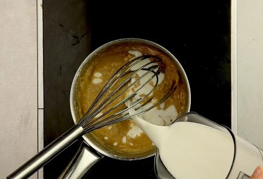
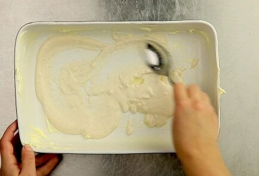

| ПРОДУКТ | ГРАММОВКА |
|---|---|
| Мясной фарш | 600 г |
| Соус болоньезе | 600 г |
| Сливочное масло | 60 г |
| Пшеничная мука | 2,5 столовые ложки |
| Оливковое масло | 2 столовые ложки |
| Молоко | 750 мл |
| Готовые сухие листы лазаньи | 10 штук |
| Твердый сыр | 500 г |
Шаг 1 |
В сотейник положить сливочное масло и 2 ложки растительного масла, растопить. Постепенно добавлять муку и размешивать так, чтобы не оставалось комочков. |
|
Шаг 2 |
Когда вся мука вмешана, влить все молоко. Убавить огонь и томить до нужной консистенции: не жидкой, но и не слишком густой. Консистенция нежирной сметаны. |
 |
Шаг 3 |
На сковороде раскалить оливковое масло. Добавить мясной фарш. |
|
Шаг 4 |
Фарш жарить до полуготовности. Влить в него соус болоньезе, посолить и поперчить по вкусу. |
|
Шаг 5 |
Духовку разогреть до 180 градусов. Форму смазать сливочным маслом. На дно вылить немного соуса бешамель, чуть-чуть, только чтобы покрыть дно. |
 |
| Шаг 6 |
Выложить пласты (не вареные). На пласты выложить получившийся фарш (не жалеем!), на фарш — натертый сыр. На сыр — соус бешамель. |
|
Шаг 7 |
Соуса нужно выкладывать столько, сколько необходимо, на ваш взгляд, чтобы лазанья получилась сочной. Поверх соуса выложить сухие листы лазаньи. Повторить процедуру. |
|
| Шаг 8 |
Последний слой листов промазать соусом бешамель и сверху щедро засыпать сыром. Дать постоять минут 7–10. Поставить в духовку. Печь 30 минут. |